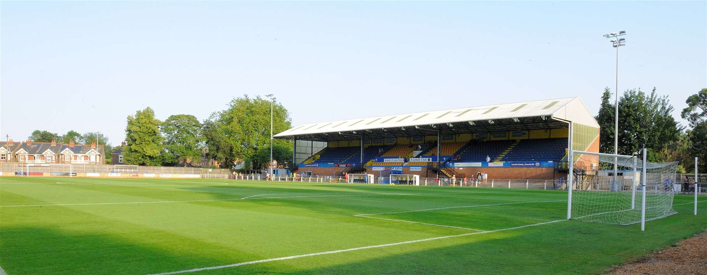

It is possible to follow the creation of the football club that represented King's Lynn from August 1881 to the present day although there
was a club that existed before this. There is reference to a sporting event staged by the "Lynn Football Club" in April 1868 so it was clearly before this date that
a King's Lynn FC existed and there is mention of matches in the press to January 1876 but there are no further match reports while it might be relevant the Lynn CEYMS
played their first game in November 1876 possibly the creation being a result of the demise of the town club. To confuse matters further it was probably not football as we know it today as football and rugby took different paths. A match between the football clubs of Lynn and Norwich in 1870 ended, according to the Lynn Advertiser, "in favour of the Norwich, by one goal and three rouges to nothing".

Picture of stadium in Kings Lynn (Located on Tennyson Avenue)